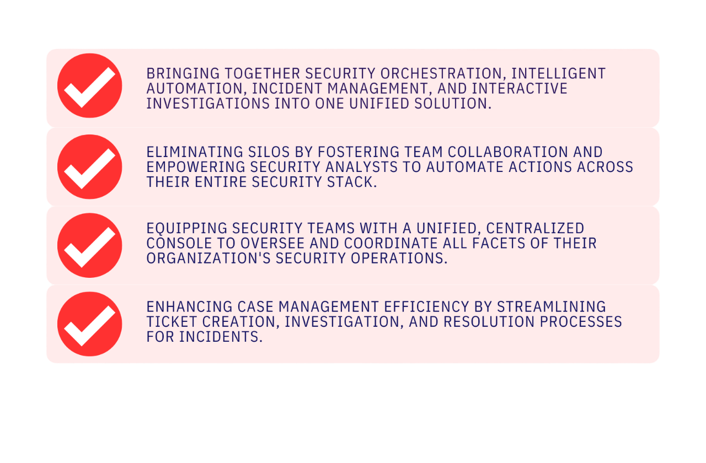
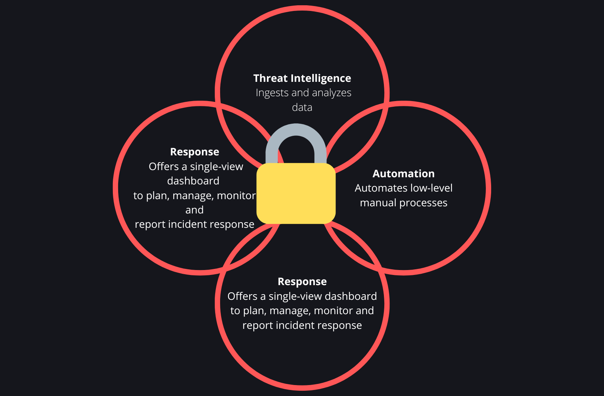

What is a Web Application Firewall (WAF)?
A web application firewall (WAF) safeguards web applications by filtering and monitoring HTTP traffic between the application and the internet. It commonly defends against attacks like cross-site forgery, cross-site scripting (XSS), file inclusion, and SQL injection, among others.
A WAF operates as a protocol layer 7 defense in the OSI model and is not intended to counter every type of attack. This attack mitigation strategy is typically one component of a comprehensive suite of tools that collectively provide a robust defense against various attack vectors.
Deploying a WAF in front of a web application creates a shield between the application and the internet. Unlike a proxy server, which protects a client's identity by acting as an intermediary, a WAF functions as a reverse proxy. It protects the server from exposure by ensuring that all client requests pass through the WAF before reaching the server.
A WAF operates using a set of rules, commonly referred to as policies, designed to filter out malicious traffic and protect against application vulnerabilities. One key advantage of a WAF is the ability to swiftly modify these policies, enabling a rapid response to different attack vectors. For instance, during a DDoS attack, rate limiting can be quickly implemented by adjusting WAF policies.
What is a log file?
Log files are computer-generated data files that serve as a primary data source for information related to the activities, operations, and usage patterns of applications, servers, operating systems, and other devices. Logs are crucial for identifying and analyzing situations when applications, systems, and networks encounter operational bottlenecks or performance issues. They provide a detailed record of every action, offering insights that help identify the root cause of problems or anomalies. Log file management involves aggregating data from multiple log sources. The following are the most common log types
- Application Logs : These logs are generated when an event occurs within an application. Code developers use application logs to understand and measure how applications behave during the development cycle and prior to release.
- System Logs : These logs record events generated within the operating system, such as driver errors during startup, sign-in and sign-out events, and other system activities.
- Security Logs : These logs provide a detailed record of security events that occur on a computer. They collect various types of events, such as unsuccessful login attempts, failed authentication requests, password changes, or file deletions. Administrators can usually configure which events they want to record and track in the security log.
-
Log management
SIEM ingests event data from a wide range of sources across an organization’s entire IT infrastructure, including on-premises and cloud environments. Event log data from users, endpoints, applications, data sources, cloud workloads, and networks, as well as from security hardware and software like firewalls or antivirus programs, is collected, correlated, and analyzed in real time. Some SIEM solutions also integrate with third-party threat intelligence feeds to correlate internal security data against known threat signatures and profiles. Integration with real-time threat feeds enables teams to block or detect new types of attack signatures. -
Event correlation and analytics
Event correlation is a crucial component of any SIEM solution. Using advanced analytics to identify and understand complex data patterns, event correlation provides insights to quickly locate and mitigate potential threats to business security. SIEM solutions significantly improve mean time to detect (MTTD) and mean time to respond (MTTR) for IT security teams by automating the manual workflows associated with the in-depth analysis of security events. -
Incident monitoring and security alerts
SIEM consolidates its analysis into a single, central dashboard where security teams monitor activity, triage alerts, identify threats, and initiate response or remediation. Most SIEM dashboards also include real-time data visualizations that help security analysts spot spikes or trends in suspicious activity. Using customizable, predefined correlation rules, administrators can be alerted immediately and take appropriate actions to mitigate threats before they materialize into more significant security issues.
How to collect and organize logs
Organizations should collect, store, and organize data in a unified manner to make sifting through massive log data easy and quick. Implementing an out-of-the-box log management solution with an intuitive interface and smart capabilities helps businesses get a complete overview of the IT environment and ensure rapid issue identification and troubleshooting. The key steps in the log management process are listed below
Centralized Log Aggregation and Standardization
Aggregating logs from multiple sources in one place is imperative. Leveraging automated log management systems helps overcome the challenges of manual log collection and aggregation, reducing the probability of errors and improving the speed of operations. It also facilitates remote log management, simplifies the overall process, and minimizes the cost and effort of managing massive log volumes. Since logs from multiple sources may come in different formats, log management solutions ensure data parsing to transform logs into a standard format for easy analysis.
Event Correlation
Intelligent log management systems improve log monitoring by leveraging machine learning or rules-based algorithms to correlate events across systems. Drawing connections between related events helps in capturing a bigger picture and deriving actionable insights for better troubleshooting.
Log Search and Analysis
With smart log management solutions, enterprises can easily filter log data via intuitive search capability. An in-built powerful search engine helps refine log data and quickly finds log entries, saving time and effort. Businesses can also employ intelligent log analysis tools to identify the root cause before an issue escalates.
Log Reporting and Visualization
Sophisticated log management solutions offer automated reports and customizable dashboards to visualize log data in real-time. As a result, enterprises can track performance metrics, keep a check on operational thresholds, and demonstrate adherence to compliance or security requirements easily.
What is security information and event management (SIEM)?
Security information and event management (SIEM) is a security solution that helps organizations recognize and address potential security threats and vulnerabilities before they can disrupt business operations. SIEM systems enable enterprise security teams to detect user behavior anomalies and utilize artificial intelligence (AI) to automate many of the manual processes associated with threat detection and incident response.
The original SIEM platforms began as log management tools, combining security information management (SIM) and security event management (SEM) functions. These platforms enabled real-time monitoring and analysis of security-related events and facilitated tracking and logging of security data for compliance or auditing purposes. Gartner coined the term SIEM for the combination of SIM and SEM technologies in 2005. Over the years, SIEM software has evolved to incorporate user and entity behavior analytics (UEBA), advanced security analytics, AI, and machine learning capabilities for identifying anomalous behaviors and indicators of advanced threats. Today, SIEM has become a staple in modern security operation centers (SOCs) for security monitoring and compliance management use cases.
How does SIEM work?
At the most basic level, all SIEM solutions perform data aggregation, consolidation, and sorting functions to identify threats and adhere to data compliance requirements. While some solutions vary in capability, most offer the same core set of functions:
What differentiates SIEM and Log Management?
SIEM encompasses log management functionalities but extends beyond it to provide real-time monitoring, advanced threat detection, correlation, incident response, and compliance reporting capabilities.
What Is SOAR?
Security orchestration, automation, and response (SOAR) technology streamline and automate security operations by coordinating tasks across people and tools within a unified platform. This enables organizations to rapidly respond to cybersecurity threats while also gaining insights to prevent future incidents, ultimately enhancing their overall security posture.
A comprehensive SOAR product, as defined by Gartner, operates under three primary software capabilities: threat and vulnerability management, security incident response, and security operations automation. Threat and vulnerability management (orchestration) encompass technologies that address cyberthreats, while security operations automation (automation) pertains to technologies enabling automation and orchestration within operations.
SOAR platforms ingest alert data, which then initiates playbooks automating response workflows or tasks. Leveraging a blend of human expertise and machine learning, organizations can analyze this varied data to understand and prioritize automated incident response actions for future threats, thereby enhancing cybersecurity practices and refining security operations.
SOAR vs. SIEM
Many consider SOAR and SIEM as akin products because both identify security issues and gather data about the nature of the problem. They also handle notifications that security personnel can use to address concerns. However, significant differences exist between them.
SOAR, like SIEM, gathers data and notifies security teams via a centralized platform. However, while SIEM solely delivers alerts to security analysts, SOAR integrates automation and response into the investigation process through automated playbooks or workflows and artificial intelligence (AI) for pattern behavior learning. This capability enables SOAR to anticipate similar threats before they occur. Additionally, SOAR platforms like Cortex XSOAR often ingest alerts from sources not covered by SIEMs, such as vulnerability scan findings, cloud security alerts, and IoT device alerts. This integration facilitates alert deduplication, a common use case for SOAR and SIEM integration, which reduces the time required for manual alert handling. Consequently, IT security personnel can more efficiently detect and address threats.

Why Is SOAR Important?
In today's rapidly evolving digital landscape, organizations face myriad cybersecurity challenges. As threats become more complex and malicious, companies must develop efficient strategies to safeguard their operations effectively. SOAR is at the forefront of transforming security operations by revolutionizing how teams manage, analyze, and respond to alerts and threats. Presently, security operations teams grapple with the daunting task of manually handling thousands of alerts daily. This manual approach not only leads to errors and operational inefficiencies but also highlights the limitations of outdated and siloed security tools. Moreover, the shortage of skilled cybersecurity professionals exacerbates these challenges. Many security teams struggle to correlate data from disparate systems, resulting in numerous error-prone manual processes. Coupled with the scarcity of qualified talent, this situation leaves analysts overwhelmed and at risk of missing genuine threats amidst the noise. Given the escalating volume of threats and alerts and the resource constraints to address them, analysts must prioritize which alerts to address, often risking oversight of critical threats. This overburdening leads to a surge in errors as analysts endeavor to respond promptly to threats and malicious actors.
Given these challenges, it's imperative for organizations to implement systems like a SOAR platform to systematically orchestrate and automate their alert and response processes. By automating routine tasks that consume significant time, energy, and resources, security operations teams can enhance their efficiency and effectiveness in handling and investigating incidents, thus significantly improving the organization's overall security posture.
SOAR empowers organizations to
Integrate security, IT operations and threat intelligence tools.
Consolidate diverse security solutions, even those from different vendors, for enhanced data collection and analysis, eliminating the need for security teams to manage multiple consoles and tools.
View everything in one place
Security teams benefit from a centralized console, streamlining access to all necessary information for incident investigation and remediation.
Speed incident response
SOAR platforms have demonstrated reductions in both the mean time to detect (MTTD) and the mean time to respond (MTTR). By automating numerous actions, a significant portion of incidents can be promptly and automatically addressed.
Prevent time-consuming actions
SOAR significantly diminishes false positives, repetitive tasks, and manual processes, freeing up valuable time for security analysts. This allows them to focus on more critical tasks, such as threat hunting and incident response.
Access better intelligence
SOAR solutions consolidate and validate data from various sources such as threat intelligence platforms, firewalls, intrusion detection systems, SIEMs, and more, providing your security team with enhanced insight and context. This facilitates issue resolution and enables improved practices, empowering analysts to conduct more comprehensive investigations when addressing problems.
Improve reporting and communication
By aggregating all security operations activities into a single platform and presenting them through intuitive dashboards, stakeholders gain access to comprehensive information. This includes clear metrics that assist in identifying areas for workflow improvements and reducing response times.
Finding the best SOAR solution for any security operations requires alignment of the vendor’s offerings and the SOC organization’s need to improve efficiency and efficacy. The right SOAR solution should not only complement and be compatible with the products, playbooks and processes that are already set in place, it should also optimize collaboration, offer flexibility in both deployment and hosting capabilities, and have a pricing model that aligns to the needs of the organization.
Find the right solution for your business with Ruth Victor
And more enterprise-grade solutions to protect your digital assets.